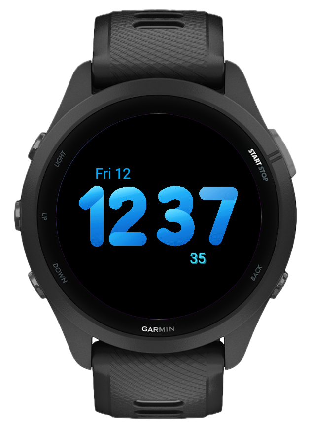
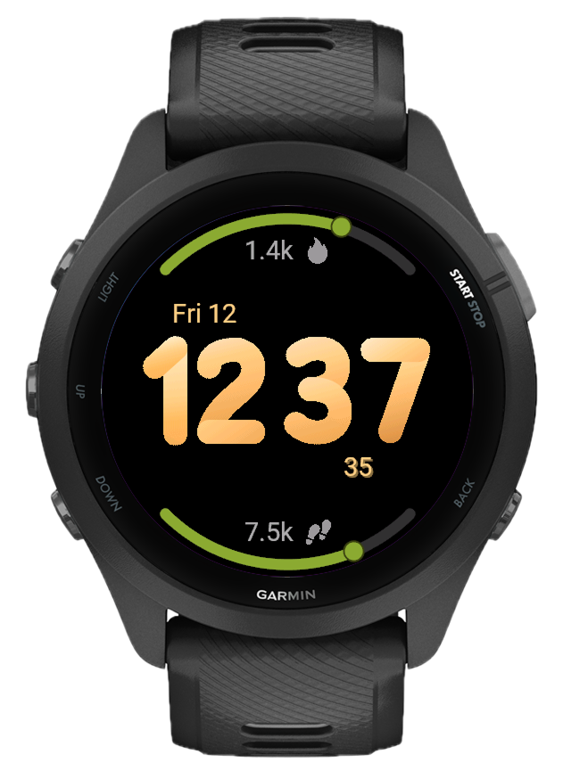
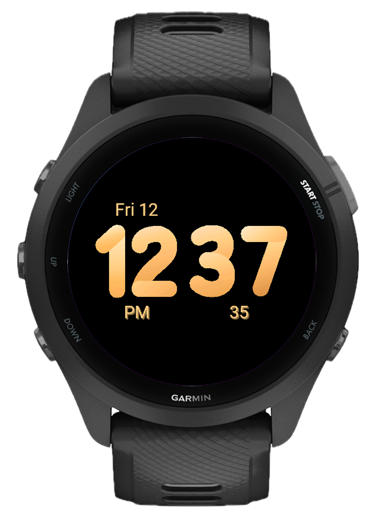
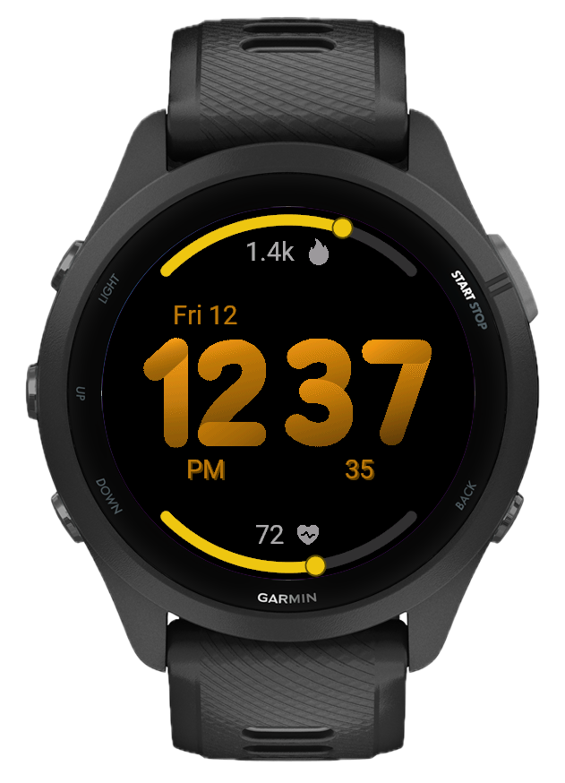

Progress, not just numbers
There are two 90-degree arcs: one at the top of the face, one at the bottom. Each arc fills from empty to full based on how far along you are toward your goal. A colored tip dot marks exactly where you are. Assign any data field to each arc independently: steps, heart rate, body battery, battery level, stress, calories, floors, active minutes, recovery time, VO2 max, training status, or weather.

15 ready-made looks
Not in the mood to tune five colors manually? Pick one of the 15 built-in themes and the whole face updates at once: Classic, Coffee, Rose, Blush, Ember, Coral, Matcha, Mint, Ocean, Sapphire, Sky, Arctic, Midnight, Aurora, Neon. Each theme sets the arc curve, data arc, time, date, and background colors together.

Five independent color slots
Every color element is configurable on its own. Pick from 35 named colors for the seconds display, the data arc fill, the time digits, the date, and the background independently. Start from a theme and adjust just the parts you want to change.

Tune what you see
The arc track and the numeric label next to each icon are independently toggleable. Show the arc with numbers, the arc alone, numbers alone, or just the icon. Seconds can be turned on or off. The face dims to a clean AOD mode when your wrist is down, showing just the time on a black screen.

Built for Garmin, built to last
No clutter, no ads, no subscriptions. Gradient works on 80+ Garmin devices across Fenix, Forerunner, Venu, Instinct, epix, Descent, and more.
What's new
- Large colored bitmap digits for hours and minutes
- Date above hours, seconds below minutes (optional)
- AM/PM indicator in 12h mode
- Always-On Display (AOD) with dimmed digits
- 12h/24h time format
- Top arc and bottom arc, each 90° with fill progress and tip dot
- Arc track and numeric label independently toggleable
- Steps, Calories, Heart Rate, Battery, Body Battery
- Active Minutes, Floors, Stress
- Recovery Time, Training Status, VO2 Max
- Weather (condition + temperature, °C/°F)
- Configurable max values for arc progress (steps, calories, heart rate, active min, recovery time, VO2 max)
- 15 preset themes: Classic, Coffee, Rose, Blush, Ember, Coral, Matcha, Mint, Ocean, Sapphire, Sky, Arctic, Midnight, Aurora, Neon
- Seconds color, data arc color, time color, date color, and background all independently configurable from 35 named colors
- Time format (12h / 24h)
- Temperature unit (°C / °F)
- Seconds (on / off)
- Numeric data labels (on / off)
- Data arc tracks (on / off)
- Reset All
- Approach® S50, S70 42mm, S70 47mm
- D2® Air X10, Mach 1, Mach 2, Mach 2 Pro
- Descent® G2, Mk3 43mm, Mk3 51mm
- Enduro® 3
- epix™ 2, epix™ Pro 42mm / 47mm / 51mm
- fēnix® 7 / 7S / 7X, fēnix® 7 Pro / 7S Pro / 7X Pro
- fēnix® 8 43mm / 47mm, fēnix® 8 Pro 47mm
- fēnix® 8 Solar 47mm / 51mm, fēnix® E
- Forerunner® 165 / 165m, 170 / 170m, 255 / 255m / 255S / 255Sm
- Forerunner® 265 / 265S, 570 42mm / 47mm, 70, 955, 965, 970
- Instinct® 3 AMOLED 45mm / 50mm, Instinct® Crossover AMOLED
- MARQ® (Gen 2), MARQ® Aviator (Gen 2)
- Venu® 2 / 2 Plus / 2S, Venu® 3 / 3S, Venu® 4 41mm / 45mm
- Venu® SQ 2 / SQ 2 Music, Venu® X1
- vívoactive® 5, vívoactive® 6